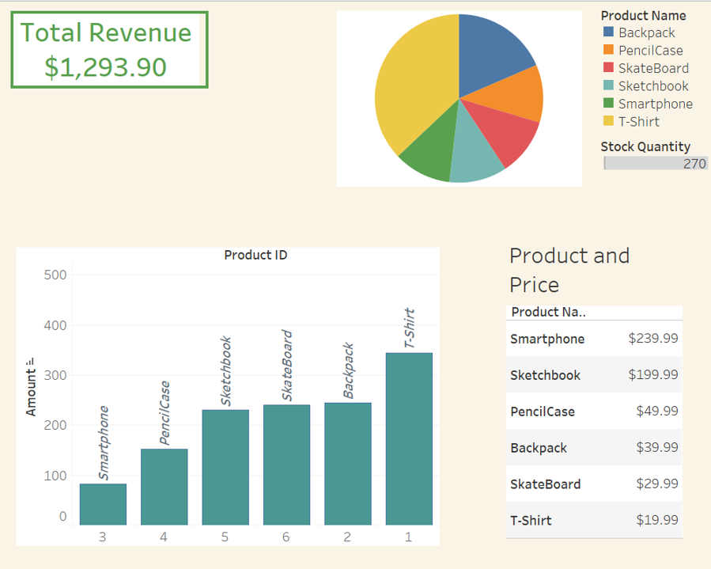

Gabriel's Projects and Experience
DataAnalystPortfolio
Project 1: Stock and Sales Dashboard For Store
Full Project Link
As Junior Database Manager at Ruzvidzo Store I built a dashboard Using Tableau, MS SQL and Excel to present Stock data
in a visually appealling and easily comprehended appearance.
Through the use of Tableau, Excel, and SQL in our store, our sales dashboard provided tangible
results.
We observed a 23% increase in revenue within the first quarter of implementation, attributed to
informed decision-making driven by the dashboard insights.
Additionally, identifying the top-selling items through the dashboard allowed us to strategically promote these items, leading to a 15% increase in the sale of high-margin products.
1. Data was taken from excel records and entered into SQL
2. After Modifying and creating Tables in MS SQL , Data cleaning and Presentation was completed was performed using Tableau
3. The model used both content based filtering techniques and collaborative filtering techniques
4. Final dashboard was presented to stake holders both in powerpoint slide form and Through presentation using Tableau's interactive dashboard
Screenshot of Tableau interactive dashboard (full project in link given above)

Experience - Operations Analyst - Amazon (Dec 2022 - Sep 2023)
Engaged remotely and autonomously to manage and resolve over 40 daily customer inquiries, using SQL and Excel to
analyze data and generate insights to address issues promptly.
Acted as the primary contact for customers and technicians, utilizing Outlook Email and phone communication.
Managed the scheduling of product installations while handling and safeguarding confidential client data, ensuring
compliance with data privacy regulations.
Collaborated effectively with cross-functional team members across diverse time zones, contributing analytical
expertise and insights to optimize workflow
Assistant Database Manager- Ruzvidzo Take Away Store, Zimbabwe - (Jan 2022 – Aug 2022)

In my role as a junior database manager, I used SQL, Excel, and Tableau to streamline data operations. Using
SQL, I managed databases, queried information, and ensured data integrity. Excel became my go-to for data
manipulation, cleansing, and transforming raw data into insightful formats.Tableau elevated this process by
visualizing complex datasets into intuitive dashboards and reports, enabling stakeholders to grasp key insights
at a glance. This integration facilitated efficient data management, analysis, and presentation, empowering
informed decision-making within the team and optimizing our database processes.